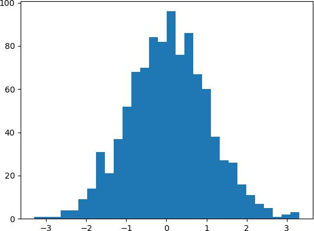
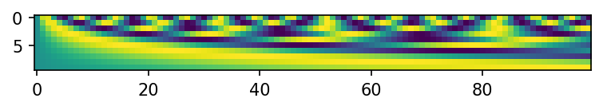
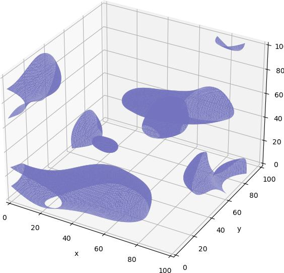
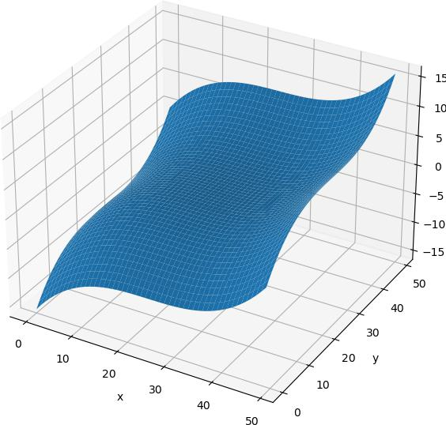

Monkey patched classes
These are functionalities added to other libraries, or “monkey-patched” them. How
is this possible? Check out k1lib.patch().
- k1lib._monkey.dummy()[source]
Does nothing. Only here so that you can read source code of this file and see what’s up.
Python builtins
- str.splitCamel()
Splits a string up based on camel case. Example:
# returns ['IHave', 'No', 'Idea', 'What', 'To', 'Put', 'Here'] "IHaveNoIdeaWhatToPutHere".splitCamel()
Class torch.nn.Module
- Module.getParamsVector() List[Tensor]
For each parameter, returns a normal distributed random tensor with the same standard deviation as the original parameter
- Module.importParams(params: List[Parameter])
Given a list of
torch.nn.parameter.Parameter/torch.Tensor, update the currenttorch.nn.Module’s parameters with it’
- Module.exportParams() List[Tensor]
Gets the list of
torch.Tensordata
- Module.paramsContext()
A nice context manager for
importParams()andexportParams(). Returns the old parameters on enter context. Example:m = nn.Linear(2, 3) with m.paramsContext() as oldParam: pass # go wild, train, mutate `m` however much you like # m automatically snaps back to the old param
Small reminder that this is not foolproof, as there are some
Modulethat stores extra information not accessible from the model itself, likeBatchNorm2d.
- Module.deviceContext(buffers: bool = True) ContextManager
Preserves the device of whatever operation is inside this. Example:
import torch.nn as nn m = nn.Linear(3, 4) with m.deviceContext(): m.cuda() # moves whole model to cuda # automatically moves model to cpu
This is capable of preserving buffers’ devices too. But it might be unstable.
Parameterare often updated inline, and they keep their old identity, which makes it easy to keep track of which device the parameters are on. However, buffers are rarely updated inline, so their identities change all the time. To deal with this, this does something like this:devices = [buf.device for buf in self.buffers()] yield # entering context manager for buffer, device in zip(self.buffers(), devices): buffer.data = buffer.data.to(device=device)
This means that while inside the context, if you add a buffer anywhere to the network, buffer-device alignment will be shifted and wrong. So, register all your buffers (aka Tensors attached to
Module) outside this context to avoid headaches, or setbuffersoption to False.If you don’t know what I’m talking about, don’t worry and just leave as default.
- Parameters
buffers – whether to preserve device of buffers (regular Tensors attached to
Module) or not.
- Module.gradContext()
Preserves the requires_grad attribute. Example:
m = nn.Linear(2, 3) with m.gradContext(): m.weight.requires_grad = False # returns True m.weight.requires_grad
It’s worth mentioning that this does not work with buffers (Tensors attached to
torch.nn.Module), as buffers are not meant to track gradients!
- Module.__ror__(x)
Allows piping input to
torch.nn.Module, to match same style as the modulek1lib.cli. Example:# returns torch.Size([5, 3]) torch.randn(5, 2) | nn.Linear(2, 3) | cli.shape()
- Module.select(css: str = '*') ModuleSelector
Creates a new ModuleSelector, in sync with a model. Example:
mS = selector.select(nn.Linear(3, 4), "#root:propA")
Or, you can do it the more direct way:
mS = nn.Linear(3, 4).select("#root:propA")
- Parameters
model – the
torch.nn.Moduleobject to select fromcss – the css selectors
- Module.nParams
Get the number of parameters of this module. Example:
# returns 9, because 6 (2*3) for weight, and 3 for bias nn.Linear(2, 3).nParams
Class torch.Tensor
- Tensor.crissCross() Tensor
Concats multiple 1d tensors, sorts it, and get evenly-spaced values. Also available as
torch.crissCross()andcrissCross(). Example:a = torch.tensor([2, 2, 3, 6]) b = torch.tensor([4, 8, 10, 12, 18, 20, 30, 35]) # returns tensor([2, 3, 6, 10, 18, 30]) a.crissCross(b) # returns tensor([ 2, 4, 8, 10, 18, 20, 30, 35]) a.crissCross(*([b]*10)) # 1 "a" and 10 "b"s # returns tensor([ 2, 2, 3, 6, 18]) b.crissCross(*([a]*10)) # 1 "b" and 10 "a"s
Note how in the second case, the length is the same as tensor b, and the contents are pretty close to b. In the third case, it’s the opposite. Length is almost the same as tensor a, and the contents are also pretty close to a.
- Tensor.histBounds(bins=100) Tensor
Flattens and sorts the tensor, then get value of tensor at regular linspace intervals. Does not guarantee bounds’ uniqueness. Example:
# Tensor with lots of 2s and 5s a = torch.Tensor([2]*5 + [3]*3 + [4] + [5]*4) # returns torch.tensor([2., 3., 5.]) a.histBounds(3).unique()
The example result essentially shows 3 bins: \([2, 3)\), \([3, 5)\) and \([5, \infty)\). This might be useful in scaling pixels so that networks handle it nicely. Rough idea taken from fastai.medical.imaging.
- Tensor.histScaled(bins=100, bounds=None) Tensor
Scale tensor’s values so that the values are roughly spreaded out in range \([0, 1]\) to ease neural networks’ pain. Rough idea taken from fastai.medical.imaging. Example:
# normal-distributed values a = torch.randn(1000) # plot #1 shows a normal distribution plt.hist(a.numpy(), bins=30); plt.show() # plot #2 shows almost-uniform distribution plt.hist(a.histScaled().numpy()); plt.show()
Plot #1:

Plot #2:
- Parameters
bins – if
boundsnot specified, then will scale according to a hist with this many binsbounds – if specified, then
binsis ignored and will scale according to this. Expected this to be a sorted tensor going frommin(self)tomax(self).
- Tensor.positionalEncode(richFactor: float = 2) Tensor
Position encode a tensor of shape \((L, F)\), where \(L\) is the sequence length, \(F\) is the encoded features. Will add the encodings directly to the input tensor and return it.
This is a bit different from the standard implementations that ppl use. This is exactly:
\[p = \frac{i}{F\cdot richFactor}\]\[w = 1/10000^p\]\[pe = sin(w * L)\]With
ifrom range [0, F), andpthe “progress”. IfrichFactoris 1 (original algo), thenpgoes from 0% to 100% of the features. Example:import matplotlib.pyplot as plt, torch, k1lib plt.figure(dpi=150) plt.imshow(torch.zeros(100, 10).positionalEncode().T)
- Parameters
richFactor – the bigger, the richer the features are. A lot of times, I observe that the features that are meant to cover huge scales are pretty empty and don’t really contribute anything useful. So this is to bump up the usefulness of those features
- Tensor.clearNan(value: float = 0.0) Tensor
Sets all nan values to a specified value. Example:
a = torch.randn(3, 3) * float("nan") a.clearNan() # now full of zeros
- Tensor.hasInfs()
Whether this Tensor has negative or positive infinities.
Module torch
- torch.loglinspace(b, n=100, **kwargs)
Like
torch.linspace(), but spread the values out in log space, instead of linear space. Different fromtorch.logspace()
- torch.sameStorage(b)
Check whether 2 (
np.ndarrayortorch.Tensor) has the same storage or not. Example:a = np.linspace(2, 3, 50) # returns True torch.sameStorage(a, a[:5]) # returns True torch.sameStorage(a[:10], a[:5]) returns false torch.sameStorage(a[:10], np.linspace(3, 4))
All examples above should work with PyTorch tensors as well.
Class graphviz.Digraph
- Digraph.__call__(_from, *tos, **kwargs)
Convenience method to quickly construct graphs. Example:
g = k1lib.graph() g("a", "b", "c") g # displays arrows from "a" to "b" and "a" to "c"
Class graphviz.Graph
- Graph.__call__(_from, *tos, **kwargs)
Convenience method to quickly construct graphs. Example:
g = k1lib.graph() g("a", "b", "c") g # displays arrows from "a" to "b" and "a" to "c"
Class mpl_toolkits.mplot3d.axes3d.Axes3D
- Axes3D.march(heatMap, level: float = 0, facecolor=[0.45, 0.45, 0.75], edgecolor=None)
Use marching cubes to plot surface of a 3d heat map. Example:
plt.k3d(6).march(k1lib.perlin3d(), 0.17)
A more tangible example:
t = torch.zeros(100, 100, 100) t[20:30,20:30,20:30] = 1 t[80:90,20:30,40:50] = 1 plt.k3d().march(t.numpy())
The function name is “march” because how it works internally is by using something called marching cubes.
- Parameters
heatMap – 3d numpy array
level – array value to form the surface on
- Axes3D.surface(z, **kwargs)
Plots 2d surface in 3d. Pretty much exactly the same as
plot_surface(), but fields x and y are filled in automatically. Example:x, y = np.meshgrid(np.linspace(-2, 2), np.linspace(-2, 2)) plt.k3d(6).surface(x**3 + y**3)
- Parameters
z – 2d numpy array for the heights
kwargs – keyword arguments passed to
plot_surface
- Axes3D.plane(origin, v1, v2=None, s1: float = 1, s2: float = 1, **kwargs)
Plots a 3d plane.
- Parameters
origin – origin vector, shape (3,)
v1 – 1st vector, shape (3,)
v2 – optional 2nd vector, shape(3,). If specified, plots a plane created by 2 vectors. If not, plots a plane perpendicular to the 1st vector
s1 – optional, how much to scale 1st vector by
s2 – optional, how much to scale 2nd vector by
kwargs – keyword arguments passed to
plot_surface()
Module matplotlib.pyplot
- pyplot.k3d(labels=True, *args, **kwargs)
Convenience function to get an
Axes3D.- Parameters
labels – whether to include xyz labels or not
size – figure size
- pyplot.animate(azimStart=0, elevSpeed=0.9, elevStart=0, frames=20, close=True)
Animates the existing 3d axes. Example:
plt.k3d().scatter(*np.random.randn(3, 10)) plt.animate()
- Parameters
frames – how many frames to render? Frame rate is 30 fps
close – whether to close the figure (to prevent the animation and static plot showing at the same time) or not